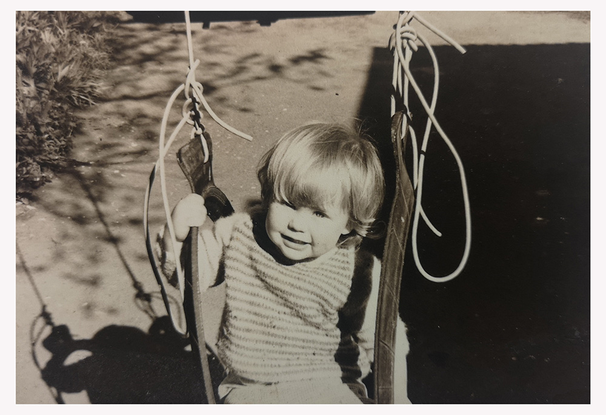

I was raised in an environment that encouraged connection, cohesive relationships between each other and my community. Kindness,
empathy, family/belonging, love, respect, and understanding of my place in the wider community were taught from a young age. I’m thankful
for these values I embody, trying my best to live them out in practical ways daily while trying to teach my children the same. Growing up being an
active participant in my wider community, eg music/church/sport/education helped give me a sense of purpose and grounding. I value the wider
community around me and our uniqueness, we are not all the same thank goodness!
I believe communities thrive when many voices are heard and celebrated.
While I’d love to say my values come from my culture, I don’t believe this to be the case. I’m currently unpacking what European/NZ culture is.
There is some learning I need to start around my family's history in NZ and overseas, Pakeha/New Zealanders history. I’ve been thinking about the
lack of ritual and connection to place for many New Zealanders, especially as a relatively young nation. Can we adopt other cultural traditions, or
create our own? This is something I will be exploring in the future, asking my family questions, exploring, listening, and reading. I’m interested in
what the word culture is to people and how they live this out in their everyday lives. I celebrate diversity and enjoy learning about cultures in New
Zealand and the world, then turning inward and asking what is Kiwi culture?
An example of an ethical situation I had during a particularly rainy morning I was dropping my son off on my way to work. The street I was navigating
was particularly narrow. As I tried to pull into a park I scrapped the car to the left of me. Feeling foolish I had to make the decision do I drive away or
leave a note explaining the damage to their car? No one had seen the incident, so I could have driven away. I remember thinking if that was me I’d want
someone to leave a note with contact details. Even though the damage was small I had a chance to do the right thing. I stopped, found some paper, and
scribbled down my details with all caps SORRY. The driver got in touch over the next few days thanking me and asking for insurance details. Do to others
as you would be done by. I truly believe we are to respect everyone we come into contact with.

I recently did some work with a life coach, my homework was to write down my core values, this was invaluable. I regularly ask myself the question, does
this align with my values? What will my approach be with this in mind? An awareness of my values provides structure going into learning and my career. I've
used my values to frame my strengths and limitations in learning and career development.
A core value I hold is empathy for others. I believe it plays a key role in many aspects of life and learning. Bringing empathy into situations helps with
accepting others, noticing, listening actively, perspective-taking, and being considerate. These qualities help strengthen my ability to learn, remaining open to
other people's views, and understand that our differences are special! When empathy is brought into situations there are chances for growth and change. I bring empathy
to help support people, also respecting others that teach me. I have an active role in participating both as a learner and teacher myself. While empathy is important to
me, I know it’s sometimes a challenge. With a high level of awareness of others, I can put my needs second, or let my tasks get put aside because I see someone else in
need. I’m actively working on this limitation. Stepping back and asking myself what I need right now and is this currently something I have time or energy to help with.
With this perspective, I recognise I’m not able to help others well if I haven’t looked after myself first.
I am naturally a critical thinker, seeking to find answers. Critical thinking is a strong value to have in learning. It provides me the ability to evaluate, challenge,
pose questions and connect ideas and not bring judgment into learning and towards others. As I run my own business I’ve had to take on many roles. If I don’t know something
I will learn how to do it, research, read, listen, and keep hunting. I’ve also learned to ask questions. Over the years I’ve seen the benefit of asking for advice, knowledge,
or help. This isn’t something in the past I did naturally, but through challenging my pride and acceptance that I cannot do and know all things, I’ve learned to open up to my
wider community and engage. I’ve met some wonderful people this way with great expertise. Understanding that we are part of a greater whole is key in learning. I believe it
honours the teachers in my life and my ability to teach others.
I value living in the present moment daily. Being present with myself and with those around me. Understanding the preciousness of the present moment helps with
focus and stay on task. The present moment is the most precious thing we have. I try to journal regularly and notice when my thoughts are straying from the present.
I use visual cues to remind myself to ‘come back'. One example of this reminder is the little yellow stickers I’ve placed on items I use daily ie my laptop. Seeing the yellow
sticker, I take a few deep breathes recenter and come back to the present. This value and technique have helped me to become more aware of my thoughts and how
they can affect my daily life. I believe this has increased my capacity to learn and relate well to others greatly. Clearing my brain from thoughts that aren’t helpful or
useful I’m able to absorb information easier, accept my situation, and be more present socially. Some days the present is difficult but I accept I’m human. I listen to
Ekhart Tolle’s teaching on the present moment and Kara Loewentheil, on social conditioning and critical self-talk to help remind me our thoughts are powerful! I’ve not
always lived with this awareness and have found my thoughts to be a challenge working against me, not for me. Starting a new learning adventure can be difficult. In
the past, I've avoided certain challenges or job opportunities, with critical thinking of myself and my abilities. Small mistakes or inabilities being a reflection of my self-
worth. Limiting thoughts and beliefs are natural but can be questioned, is this truthful? Is this helpful right now? I’m looking forward to putting this knowledge into practice
in my learning and career.
As a designer, I love helping people make their vision come to life. Figuring out the puzzle, finding solutions, actioning, then with a final product. I’ve had some wonderful
opportunities to work with others and I’m passionate about exploring that more. Being self-employed has meant a lot of solo work projects while I managed children and
found small gaps to work. This solo time has been wonderful for understanding myself and how I learn best and manage time but has also hindered my opportunities to
work in a team environment. At the end of last year, I asked myself the question “Who are my people?”. It was a good time to become part of a team, knowing I work wel
l with others but wanting to see this applied practically. Joining EDA has allowed me to be part of a team of like-minded people passionate about learning. I’ve recently been
asking myself "What do I have to offer my wider community?" I’m excited to see this offering develop in my learning with others and ultimately in my future career. My passion
and curiosity to work collaboratively will ultimately help my learning and career goals. Bringing awareness, empathy, and critical thinking to working with others will strengthen
my ability to adapt and help others. There will be a period of adapting to a new working environment. My challenge will be to speak up and make myself hear, knowing my voice
is also important in the larger conversation.
I value resilience and see it as a strength in my learning and career journey. Resilience has allowed me to persevere in life and learning, through great challenges. Tied to the
concept of grit, resilience helps me to learn from my mistakes, problem solve, see my strengths and weaknesses, helping with self-esteem, and the ability to set goals. I love
Phycologist Angela Duckworth’s research on grit, by her definition, “Grit is passion and perseverance for very long-term goals.” Some characteristics of grit are courage,
conscientiousness, long-term goals and endurance, following through, resilience, showing excellence (not perfection). Grit is something I bring to learning and my career.
I
can stick with difficult situations and challenges in both my personal life, learning, and work. This attitude has allowed me to take on a growth mindset, my brain can change
and adapt to new information through persistence and understanding, when I fail I am learning. Coming into a new learning environment can have its challenges but bringing
a growth mindset helps the beginner in me to relax and enjoy the ride of learning. Mistakes are opportunities for growth and change. In the past, I’ve been known to not tackle
a task or take on work for fear of failure or appearing unknowledgeable. I’m actively flipping this way of thinking. Learning is lifelong, it’s to be embraced no matter what stage
we are at. While I can work extremely hard and see this as a strength it can also limit balance in my life. Managing time well and stepping away from work has been difficult in
the past. Working smarter not harder will be a good mantra to use in learning and career goals.
I’m naturally a curious person. When I apply this curiosity to learning it helps ignite passion and motivation. I like to understand where I and others fit in the world. Curiosity
enables me to find new ideas and new ways of thinking. Being curious as a visual and creative person my thoughts can jump around frequently. While this allows me to join the dots
between many big picture concepts the finer details can sometimes get overlooked. While this is a challenge, I’m frequently researching productivity and habit behaviour.
Understanding and awareness of how my brain works have helped immensely. Knowing when to switch between big and detail, convergent and divergent thinking, using tools to keep me
on track is key. One example, I follow the bullet journal method for keeping tasks prioritised, goal setting, mindful practises, time tracking. An analog system that “helps
track the past, organise the present, and plan for the future.” Ryder Carroll.
An example of where I was trying to work productively with others was in the workplace. I was pulled onto a design job last minute to help finish as the previous designer
had to leave the job abruptly for personal reasons. I was given the task of completing unfinished work on a very large job with a tight deadline. Very quickly I noticed the job
was done incorrectly and everything needed fixing. This put my timeline further back, unfortunately. There was a lot of pressure from the client to get things finished. I clearly
stated what the problem was, communicated daily and clearly on what deliverables I could achieve. My role was to create huge graphic prints, this was both time-consuming
and difficult. Our client went well over the changes allocated to them. I was dealing with a looming deadline, starting files from scratch and being drip-fed changes. I broke down
the tasks into manageable parts, prioritised daily, reviewed work, communicated well and regularly with the printer, remained calm while working 70 hour weeks. The client came
in and did reviews on the spot, which created tension and some nerves from my end, but I handled it professionally and it was fruitful. The client had high expectations and very
little empathy which was not easy. With all the struggles and hurdles we delivered and produced something that educated New Zealand's history creatively and effectively. I was
proud to be part of that. The client was thrilled and the outcomes and feedback from the public were positive. If I was placed in a similar situation next time I would be more firm
around my time boundaries. If this was an organisation I was part of I would clearly state my needs and advise more help or time would be required going forward. My time and
energy need to be protected, having a clear sense of self and understanding around what is required of you are important.